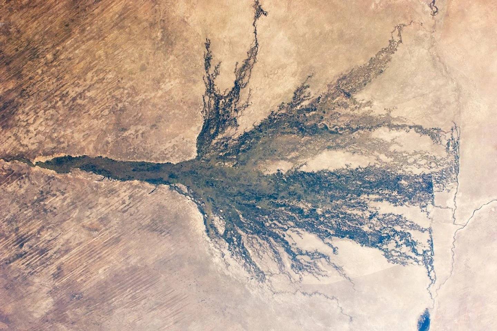

An African space company.
A practical purpose.
We turn Earth observation into intelligence people can use. Our focus is helping businesses understand their relationship with nature and make informed decisions that strengthen both their operations and the landscapes around them.
Africa thriving.
Nature valued.
A future where every business, however small, can use Earth intelligence to thrive alongside nature.
Make nature intelligence
work for everyone.
Turn satellite data, environmental science and local knowledge into clear, accessible tools that help businesses understand their dependencies, manage their impacts and act with confidence.
What we do
EagleNatureInsight
Our lead platform connects business activities with water, land, biodiversity and ecosystems. It guides users through TNFD’s Locate, Evaluate, Assess and Prepare approach, turning the evidence into practical actions and clear reports.
Explore the platform →Place-based insight
Mapping and environmental analysis for agriculture, climate and risk. We connect changes in the landscape with the decisions people need to make.
Knowledge people can use
Skills development and collaboration that help businesses and institutions understand the evidence and build their own capability.

Nature supports
the economy.
A business’s water supply, materials and productive land are connected to the ecosystems around it. Understanding those connections makes it easier to see where a change could affect the business and where a useful response can begin.
We combine the view from space with evidence from the ground, so decisions reflect both the wider landscape and the realities of each operation.
Built through research and real pilots
EagleNatureInsight is being developed through research and pilot work with small businesses, including Panuka, BL Turner and Standout. Those pilots shape how we explain results, support field validation and turn evidence into actions people can use.
We work with businesses, researchers and development partners to refine the tools around real questions and useful outcomes.